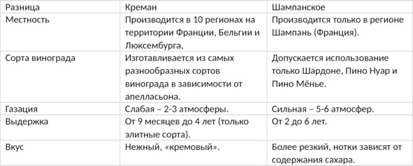
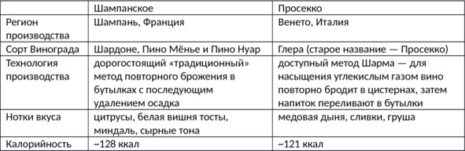

О культуре пития .. Аналоги шампанского (известные игристые вина)..


Cremant (Креман)
Креман – слабогазированное игристое вино из Франции крепостью 7—14% об. (обычно 12—13% об.), бывает белым, розовым, а иногда даже красным. Название переводится как «сливочный» – благодаря легкой карбонизации напиток почти не покалывает язык и кажется скорее кремовым, чем газированным. Креман изготавливают традиционным методом шампанизации. Хотя само название Cremant законодательно не защищается по географическому происхождению, это вино официально производят всего 10 аппелласьонов (восемь во Франции и по одному в Люксембурге и Бельгии). Теоретически любой европейский производитель может наладить выпуск напитка, главное – безукоризненно следовать французским требованиям к стилю.
История. Изначально креманом называли «неудачное» шампанское, которое получилось менее карбонизированным, чем требуется, – давление в бутылке всего 2—3 атмосферы (вместо установленных 5—6 атмосфер). Чуть позже так стали называть игристое вино из долины Луары, не выделяя напитки региона в отдельный винодельческий аппелласьон. В 1975 Cremant de Loire получил статус АОС, в том же году появился Cremant de Bourgogne, а годом позже – Cremant d’Alsace. В 1990-х креман перестали производить в Шампани, постепенно появились остальные аппелласьоны: Бордо, Лиму и пр.
Особенности технологии. Правила производства кремана похожие, но менее строгие, чем аналогичные предписания для шампанского. Креман изготавливают из собранных вручную ягод, причем урожайность участка строго контролируется и не должна превышать установленные нормы. В производстве используют сорта Шардоне, Шенен Блан, Каберне-фран, Пино Блан, Пино Грис, Совиньон Блан, Каберне Совиньон, Пино Нуар, Гаме, Мальбек, Пино д’Онис, Гролло, Алиготе и др. Точный список сортов, а также их соотношение (пропорции) зависят от конкретного аппелласьона и производителя.
Для газации используется традиционный метод вторичной ферментации (брожения) в бутылке, такой же, как при изготовлении шампанского. Первичное брожение проходит в резервуарах, затем молодое вино бутилируют, добавляют дрожжи и сахар. Будущий креман выдерживают в подвале не менее девяти месяцев. За это время в бутылке проходит вторичное брожение и напиток насыщается углекислым газом. Ближе к концу выдержки бутылки переворачивают так, чтобы осадок скопился возле горлышка. Виноделу остается провести дегоржирование – удалить мутный осадок.
Отличия кремана от шампанского указаны в таблице.

Как и с чем пить креман. Креман, как и шампанское, подают в качестве аперитива (до основной трапезы), закусывают сырами, морепродуктами, белым мясом, фруктами, легкими мясными закусками, орехами. Перед подачей игристое охлаждают до 6—10° C, бутылку нужно открывать аккуратно, без гусарской «пробки в потолок» и пенных потеков по всей комнате.
Креман – демократичный алкоголь, поэтому его не обязательно ставить в ведерко со льдом, однако рекомендуется не позволять напитку нагреваться выше 10° C – при этой температуре хорошо раскрывается старое выдержанное вино, а креман бывает только молодым.
Традиционно креман пьют из фужеров-флейт или специальных бокалов для шампанского со слегка заостренным донышком или небольшими углублениями на стенках, чтобы «газированное» вино образовало еще больше пузырьков. Бокал заполняют максимум на две трети.
Известные марки кремана: Bailly Lapierre, Maison Simonnet-Febvre, Jean-Charles Boisset, Jean Perrier и др.
Asti (Асти)
Асти (Asti Spumante, Asti) – вид итальянских игристых вин крепостью около 7% об., производимых в регионе Пьемонт по особой технологии. Основоположником направления считается ювелир из Турина Джованни Баттиста Кроче. Имея познания в области химии, в начале XVII века он начал практиковать сокращенное брожение. Суть метода в том, что винному суслу не дают добродить до полной потери сахара, после насыщения углекислым газом до требуемой концентрации асти сразу разливают в бутылки, без повторного брожения.
На протяжении следующих двух столетий итальянские виноделы совершенствовали напиток. В 1863 году появилась первая бутылка «Мартини асти», а через 15 лет еще одно легендарное игристое вино – Mondoro Asti. Следующие 50 лет вина асти (тогда они назывались Moscato Champagne) не могли выйти из тени своего «старшего брата» – шампанского, продавались только в Италии и нескольких соседних странах.
Признание пришло, когда асти привезли на родину американские солдаты, возвратившиеся после Второй мировой войны. Вначале дегустаторы скептически отнеслись к новому напитку. Однако со временем народная любовь к итальянским игристым винам заставила профессионалов пересмотреть свое мнение.
Как пить. Важно соблюдать два правила. Первое – перед подачей асти охлаждают до температуры +6—8 °С. Второе – напиток следует подавать в специальном бокале, это может быть как классический широкий бокал champagne, так и высокий узкий flute. В качестве закуски подходят сладкие десертные блюда и фрукты.
Кроме Martini и Mondoro вина асти производятся и другими известными итальянскими брендами: Cinzano, Gancia и Santero.
Отличия асти от шампанского:
– Сорта винограда. Настоящее шампанское делают из трех сортов белого и красного винограда, растущих в провинции Шампань: Пино Менье, Пино Нуар и Шардоне. Для асти используются два вида белого мускатного винограда из Пьемонта – Москато Бьянко и Москато ди Канелли.
– Технология производства. Для шампанского характерен полный цикл брожения с последующим добавлением сахара и повторным брожением для насыщения углекислым газом. Вина асти газируют методом однократного незавершенного брожения.
– Вкус. Игристые вина асти не такие крепкие и слаще большинства видов шампанского. Во вкусе выделяются нотки цветов, яблок, меда и апельсинов.
Prosecco (Просекко)
Просекко – итальянское сухое игристое вино крепостью 10—12% об., изготавливаемое в регионе Венето методом Шарма из сорта винограда Глера (базовый), с возможным добавлением других сортов (до 15% объема ягод): Вердизо, Перера, Бьянкетта, Шардоне. Prosecco является названием, контролируемым по происхождению.
До 1960-х годов просекко было достаточно сладким и мало отличалось от асти, однако затем технология производства значительно улучшилась. Теперь просекко присвоены категории DOCG и DOC.
Особенности производства. Вторичная ферментация происходит в автоклавах из нержавеющей стали, а не в бутылке (хотя регламент этого и не запрещает), поэтому просекко принято пить молодым – не старше двух-трех лет. Впрочем, в последнее время активно пропагандируется точка зрения, что выдержанное просекко также обладает своим шармом, но это во многом зависит от начального качества сырья (которое может быть очень разным), условий хранения и прочих факторов.
Как пить. Просекко подают охлажденным до 5—7° C в высоких тонкостенных бокалах-флейтах. Это очень демократичное вино, которое пьют не по особенным случаям, а в качестве аперитива или просто ради удовольствия по любому поводу. В Италии до получения категории DOC даже продавалось бюджетное просекко в жестяных банках. Теперь это игристое вино разрешено продавать только в стеклянных бутылках, поэтому производителям пришлось изменить емкости. Просекко можно закусывать солеными снеками, рыбными блюдами, сырами.
Отличия просекко от шампанского указаны в таблице.

Cava (Кава)
Кава (кат. Cava) – испанское игристое вино, производимое в Каталонии и Валенсии из сортов винограда Макабео, Шарелло и Парельяда. Кроме трех классических сортов в купаж могут входить Шардоне, Мальвазия, Гарнача, Монастрель и другие – выбор зависит от производителя. Первый напиток появился в 1872 году благодаря стараниям винодела дона Хосе Равентоса. В переводе с каталонского «cava» значит «погреб».
Технология производства базируется на классическом методе. Для настоящей кавы годятся только самые спелые ягоды, сорванные вручную. Сок первого отжима помещают в танки (резервуары), где происходит первичная ферментация. Полученный виноматериал разливают по бутылкам, добавляют винные дрожжи и сахар, закрывают временной пробкой и складируют в подвалах. Чтобы избавить напиток от дрожжевого осадка после брожения, требуется провести ремюаж и дегоржаж.
Некоторые производители просто «накачивают» напиток углекислым газом. Подобное вино нельзя назвать ни элитным, ни просто качественным – так можно получить только дешевый аналог со скудным букетом и сниженными характеристиками качества.
Виды. Игристое вино кава преимущественно белое, но встречаются и розовые сорта, хотя в процентном соотношении они составляют меньшинство. По выдержке различают следующие виды:
– Cava – от 9 месяцев;
– Cava Reserva – от 15 месяцев;
– Cava Gran Reserva – от 30 месяцев.
По количеству сахара кава бывает любой: начиная от Brut Nature (сахар не добавляется) и заканчивая Dulce (содержание сахара превышает 50 г/л).
Как пить. Кава – не коллекционное вино, его нужно пить сразу после покупки. На стол напиток подают охлажденным до 5—8° C, учитывая, что температура игристого вина повышается на пару градусов каждые пять минут. Пить каву следует из бокалов типа «фужер» или «тюльпан». Такая форма позволяет аромату раскрыться, но не улетучиться. Бокал наполняют максимум на 2/3, медленно наливая напиток, чтобы выделялось как можно меньше пены. Кава прекрасно сочетается с мясными блюдами, сырами и рыбой. Классической закуской считаются тосты Pan Con Tomate: поджаренный на гриле хлеб с чесноком и помидорами.
Разница между кавой и шампанским:
– Настоящее шампанское производится только в одной французской провинции. Кава «аккредитована» в 159 испанских муниципалитетах, включая Таррагону, Валенсию, Страну Басков и другие. Впрочем, порядка 90% игристого вина производится в Пендесе, Каталония.
– Для кавы применяется местный виноград, хотя некоторые рецепты и подразумевают использование других сортов.
– Испанские виноградники не имеют рейтинга, это затрудняет оценку их качества.
– Минимальный срок выдержки кавы в два раза меньше, чем у шампанского.
– Шампанское обычно слаще.
– Кава гораздо дешевле своего французского аналога.
Lambrusco (Ламбруско)
Ламбруско – итальянское игристое вино из одноименного сорта винограда (нередко в купаж добавляют сорт Анчелотта, чтобы придать напитку более глубокий цвет и яркий аромат) крепостью 6—9% об., производимое в регионах Эмилия-Романья, Ломбардия и Пьемонт.
Lambrusco не является названием, контролируемым по происхождению. Поэтому теоретически на рынке можно встретить бутылку с таким названием производства любой страны – лишь бы сорт винограда соответствовал требуемому.
Небольшую долю вин ламбруско делают по классической технологии шампанизации, информация об этом обязательно указана на этикетке, поскольку такое вино сразу переходит в более высокую ценовую категорию. Большая же часть напитков приобретает свою пикантную шипучесть благодаря методу Шарма.
Виды. Ламбруско бывает красным, белым (делается из красного винограда, просто кожура отделяется раньше, чем успевает окрасить сок) и розовым (кожица только слегка соприкасается с соком). Также на рынке можно встретить полную линейку вкусов: начиная от сухого (без сахара) и заканчивая очень сладким. Мы традиционно относим ламбруско к категории игристых вин, но на итальянском оно называется «фриззанте» – «полуигристое». Вино приятно пощипывает язык, но не «бьет в нос». Сорт винограда Lambrusco неприхотлив и дает обильный урожай, из него получается легкое деликатное вино, сочетающееся практически с любым блюдом.
Как пить. Ламбруско пьют молодым. Признак точного соблюдения технологии – плотная пена в фужере, искристый цвет и покалывающий вкус. Сухое и полусухое вино при подаче охлаждают до 10° C, сладкие вариации могут быть на пару градусов холоднее. В качестве закуски можно подать фрукты, пирожные, рыбу и мясо.
Разница между шампанским и ламбруско:
– Ламбуруско и шампанское производятся из разных сортов винограда.
– Вкус ламбруско зависит от купажа и местности, где рос виноград. Шампанское в этом смысле преподносит гораздо меньше сюрпризов, поскольку производится только в одной французской провинции.
– Французское игристое вино изготавливается по классической технологии, для получения ламбруско в основном применяется метод Шарма.
– Итальянское игристое вино бывает белым, розовым и красным, в свою очередь шампанское почти всегда только белое.
– Самое популярное ламбруско – сладкое, большая часть вин из Шампани – полусухие, то есть вина заняли разные ниши рынка.